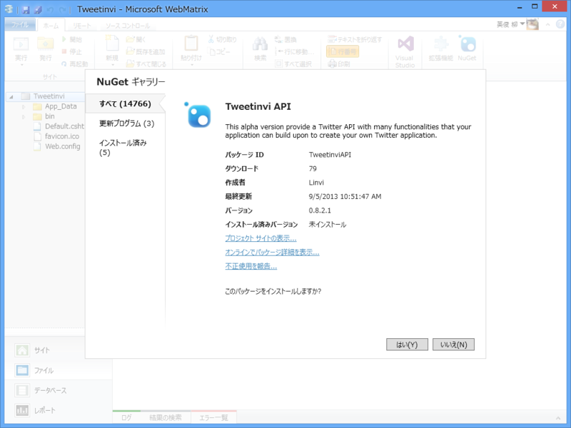
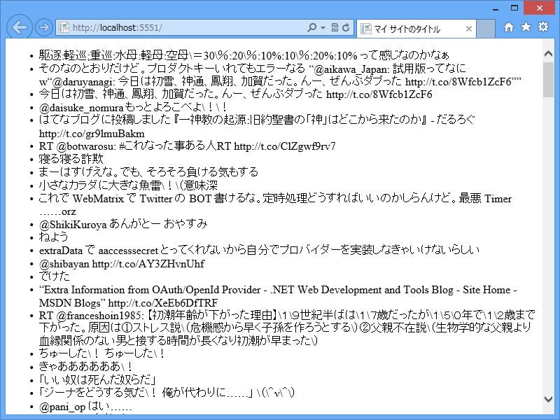

WebMatrix 3: Twitter ライブラリ Tweetinvi API でツイートしてみる
公開日：

たまたま Tweetinvi a friendly Twitter C# API - Home というのをみかけたのだけど、割と便利だった。
@{
var token = new TwitterToken.Token(
"*****************Pj5ecAhlw3SqBPU5qHtBUSiTQDcgmUzBU",
"*****************RZSPVglcM0TfE7mPCFzm334rw",
"*****************cSizQ",
"*****************zws06agyxRXImPk9sfETNQeg");
if (IsPost)
{
var tweet = new Tweetinvi.Tweet("てすてす");
tweet.Publish(token);
}
}
<!DOCTYPE html>
<html lang="ja">
<head>
<meta http-equiv="Content-Type" content="text/html; charset=utf-8"/>
<meta charset="utf-8" />
<title>マイ サイトのタイトル</title>
<link href="~/favicon.ico" rel="shortcut icon" type="image/x-icon" />
</head>
<body>
<ul>
@foreach (var tweet in new Tweetinvi.User("daruyanagi", token).GetUserTimeline())
{
<li>@tweet.Text</li>
}
</ul>
<form action="" method="post">
<input type="submit" />
</form>
</body>
</html>

GET でタイムラインを表示（なんかゴミ（\）が入ってるけど、バグかな。あとで報告しよう）。POST でツイート。
てすてす
Twitter 系のライブラリってピンキリだけど、これは UserStreams も扱えるようで、悪くない感じかな。デスクトップアプリにも組み込める、というか、PIN の認証はあるけど Web アプリの認証は今のところ未実装みたいなので、どっちかっていうと今のところデスクトップアプリ向けって感じ。
不具合、直していただきました
レスポンス、ちょっぱや！ 対応の早いところも推せますね、このライブラリ。ちなみに String.CleanString() という処理が入っているのが原因でした。
If you want to store the Text in a database you can still use the extension method :
String.CleanString() before the INSERT / UPDATE call.
String.CleanString() は String の拡張メソッドで、サニタイズだかエスケープだかをするのかな？ MySQL はぜんぜん知らない。
/// <summary> /// Clean a string so that it can be used in a URL and /// sent to Twitter /// </summary> /// <param name="s">String to clean</param> /// <returns>Cleaned string</returns> public static string CleanString(this string s) { return s != null ? (s.HTMLDecode().MySQLClean().ReplaceNonPrintableCharacters('\\')) : null; }